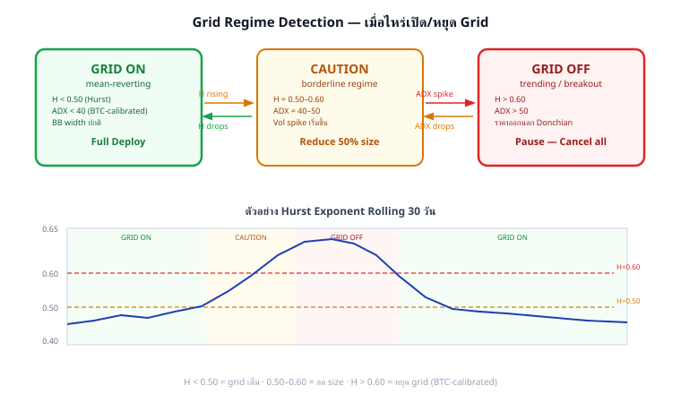

Grid Trading Mastery · Part 4
Regime Detection — เมื่อไหร่เปิด/หยุด Grid
Hurst Exponent · ADX · Bollinger Band Width · State Machine (GRID ON / CAUTION / GRID OFF)
Grid Reset + Zone Migration · Practical Watchdog System
อ้างอิง:
Statarb Ch.3 (Hurst, OU Process),
Statarb Ch.11 (State Machine)
แก่นของ Part นี้
Grid ทำงานได้ดีใน mean-reverting regime (H < 0.5) เท่านั้น — การรู้ว่า regime เปลี่ยนแปลงและตอบสนองทันทีคือความแตกต่างระหว่าง "grid ที่กำไรต่อเนื่อง" กับ "grid ที่ติดหล่ม" State Machine ช่วยเปลี่ยน grid behavior อัตโนมัติตาม regime
GRID ON (H < 0.50, ADX < 25) → CAUTION (H 0.50–0.58) → GRID OFF (H > 0.58, ADX > 30)
4.1 Hurst Exponent — ตัววัด Mean-Reversion
Hurst Exponent H วัดว่าราคาเป็น mean-reverting (H < 0.5), random walk (H = 0.5), หรือ trending (H > 0.5):
$$H = \frac{\log(R/S)}{\log(n)} \qquad \text{โดย } R/S = \text{Rescaled Range}$$
Hurst Exponent สำหรับ Grid:
คำนวณด้วย R/S Analysis (rolling 30 วัน):
1. เก็บ daily return r_i = log(P_i / P_{i-1})
2. R/S ของ n วัน = (max cumulative dev − min cumulative dev) / std(returns)
3. Plot log(R/S) vs log(n) → slope = H
def hurst_exponent(prices, min_lag=10, max_lag=100):
"""
คำนวณ Hurst จาก price series (R/S method)
"""
import numpy as np
returns = np.diff(np.log(prices))
lags = range(min_lag, min(max_lag, len(returns) // 2))
rs_values = []
for lag in lags:
# คำนวณ R/S สำหรับแต่ละ lag
sub_series = [returns[i:i+lag] for i in range(0, len(returns)-lag, lag)]
rs_per_sub = []
for sub in sub_series:
mean_sub = np.mean(sub)
dev = np.cumsum(sub - mean_sub)
R = np.max(dev) - np.min(dev)
S = np.std(sub, ddof=1)
if S > 0:
rs_per_sub.append(R / S)
if rs_per_sub:
rs_values.append((lag, np.mean(rs_per_sub)))
if len(rs_values) < 2:
return 0.5 # default random walk
log_lags = np.log([x[0] for x in rs_values])
log_rs = np.log([x[1] for x in rs_values])
H = np.polyfit(log_lags, log_rs, 1)[0]
return H
# ตัวอย่าง:
# H = 0.42 → mean-reverting → GRID ON
# H = 0.51 → random walk → CAUTION
# H = 0.63 → trending → GRID OFF

State Machine: GRID ON ↔ CAUTION ↔ GRID OFF · กราฟล่าง: Hurst rolling 30 วัน เปลี่ยน regime ตามเวลา
4.2 ADX — ยืนยัน Trend Strength
ADX (Average Directional Index) วัดความแรงของ trend โดยไม่บอกทิศทาง — ใช้ยืนยัน Hurst signal:
$$\text{ADX} = \text{Smoothed MA of DX} \qquad \text{DX} = \frac{|+DI - -DI|}{+DI + -DI} \times 100$$
ADX Value ความหมาย Grid Action < 15 ไม่มี trend (choppy) GRID ON — ideal condition 15–25 trend อ่อน GRID ON (ระวัง upper zone) 25–35 trend ปานกลาง CAUTION — ลด size 50% > 35 trend แรง GRID OFF — pause ทั้งหมด
def compute_adx(highs, lows, closes, period=14):
"""
คำนวณ ADX จาก OHLC data
"""
import numpy as np
tr_list, dm_plus, dm_minus = [], [], []
for i in range(1, len(closes)):
high_diff = highs[i] - highs[i-1]
low_diff = lows[i-1] - lows[i]
dm_plus.append(max(high_diff, 0) if high_diff > low_diff else 0)
dm_minus.append(max(low_diff, 0) if low_diff > high_diff else 0)
tr = max(highs[i] - lows[i],
abs(highs[i] - closes[i-1]),
abs(lows[i] - closes[i-1]))
tr_list.append(tr)
# Smooth ด้วย Wilder MA
def wilder_ma(data, n):
result = [sum(data[:n]) / n]
for i in range(n, len(data)):
result.append(result[-1] * (n-1)/n + data[i] / n)
return result
atr14 = wilder_ma(tr_list, period)
dmp14 = wilder_ma(dm_plus, period)
dmm14 = wilder_ma(dm_minus, period)
di_plus = [100 * p / a for p, a in zip(dmp14, atr14)]
di_minus = [100 * m / a for m, a in zip(dmm14, atr14)]
dx_list = [100 * abs(p - m) / (p + m) for p, m in zip(di_plus, di_minus)]
adx = wilder_ma(dx_list, period)
return adx[-1]
4.3 Bollinger Band Width — Squeeze Detection
BB Width ต่ำ (squeeze) = ราคากำลัง consolidate → mean-reversion regime → grid ทำงานดี BB Width พุ่งสูง = volatility expansion = breakout → grid อาจติดหล่ม
BB Width = (BB_upper − BB_lower) / SMA(20)
Thresholds สำหรับ Grid:
BB_width < 0.02 (2%) → Squeeze — GRID ON (ideal)
BB_width 0.02–0.04 → Normal — GRID ON
BB_width 0.04–0.08 → Expanding — CAUTION
BB_width > 0.08 (8%) → Wide — GRID OFF (high vol)
ตัวอย่าง BTC ที่ $100k:
BB_upper = $104,000, BB_lower = $96,000
BB_width = ($104k − $96k) / $100k = 8% → GRID OFF threshold
BB_upper = $101,500, BB_lower = $98,500
BB_width = $3k / $100k = 3% → Normal → GRID ON
4.4 State Machine — GRID ON / CAUTION / GRID OFF
GRID ON Full Deploy 100% H < 0.50
CAUTION Reduce 50% size H 0.50–0.58
GRID OFF Pause / Cancel all H > 0.58
class GridStateMachine:
STATES = ["GRID_ON", "CAUTION", "GRID_OFF"]
def __init__(self):
self.state = "GRID_ON"
self.state_history = []
def evaluate(self, hurst, adx, bb_width):
"""
Determine grid state from 3 indicators.
Requires 2-of-3 indicators to agree before state change (noise filter).
"""
signals = {
"hurst": "OFF" if hurst > 0.58 else ("CAUTION" if hurst > 0.50 else "ON"),
"adx": "OFF" if adx > 35 else ("CAUTION" if adx > 25 else "ON"),
"bb": "OFF" if bb_width > 0.08 else ("CAUTION" if bb_width > 0.04 else "ON"),
}
counts = {"ON": 0, "CAUTION": 0, "OFF": 0}
for sig in signals.values():
counts[sig] += 1
# Majority vote (2 of 3)
if counts["OFF"] >= 2:
new_state = "GRID_OFF"
elif counts["CAUTION"] >= 2 or (counts["OFF"] == 1 and counts["CAUTION"] == 1):
new_state = "CAUTION"
else:
new_state = "GRID_ON"
if new_state != self.state:
self.state_history.append((self.state, new_state))
self.state = new_state
return self.state, signals
def get_size_multiplier(self):
return {"GRID_ON": 1.0, "CAUTION": 0.5, "GRID_OFF": 0.0}[self.state]
Hysteresis — ป้องกัน State Flip ถี่เกินไป
ปัญหา: ถ้า Hurst แกว่งรอบ 0.50 (บางครั้ง 0.49 บางครั้ง 0.51) → state เปลี่ยนทุกชั่วโมง = สั่ง cancel/open orders บ่อยเกิน = fee เสียเยอะ
Solution: Hysteresis (Dead Band)
เปลี่ยนจาก GRID_ON → CAUTION ต้องมี H > 0.52 (ไม่ใช่ 0.50)
เปลี่ยนกลับจาก CAUTION → GRID_ON ต้องมี H < 0.47 (ต่ำกว่า threshold)
Dead band = 0.05 รอบ threshold ทำให้ state stable กว่า
4.5 Grid Reset — ย้าย Zone เมื่อ Regime กลับมา
เมื่อ Grid OFF แล้ว regime กลับมาเป็น mean-reverting: ราคาอาจเปลี่ยนไปมากจนต้อง reset zone ใหม่
Grid Reset Decision:
สถานการณ์ที่ต้อง Reset (ไม่ใช่แค่ restart):
1. ราคาหลุดออกนอก original zone (ต่ำกว่า zone_low หรือสูงกว่า zone_high)
2. ราคา mean เปลี่ยนไป > 15% จากตอนตั้ง grid เดิม
3. ผ่านไปนานกว่า 30 วัน (regime อาจเปลี่ยนโครงสร้าง)
def should_reset_zone(original_zone_mid, current_price, original_zone_low,
original_zone_high, days_since_open):
"""
Returns True ถ้าควร reset zone ใหม่
"""
price_drift = abs(current_price - original_zone_mid) / original_zone_mid
out_of_zone = current_price < original_zone_low or current_price > original_zone_high
large_drift = price_drift > 0.15
stale = days_since_open > 30
return out_of_zone or large_drift or stale
Grid Reset Steps:
1. Cancel orders ทั้งหมดที่ pending
2. ขาย inventory บางส่วน (ถ้า unrealized loss < 15%)
หรือ รักษา inventory ไว้ถ้า BTC (ถือได้)
3. คำนวณ zone ใหม่จาก Donchian + ATR ปัจจุบัน
4. คำนวณ Q ใหม่ตาม capital ที่เหลือ
5. วาง orders ใหม่ในชั่วโมงที่ score > 55
4.6 Zone Migration — Shift Zone ตาม Trend
แทนที่จะ reset ทั้งหมด บางครั้งแค่ "เลื่อน zone" ขึ้นหรือลงตาม EMA ก็เพียงพอ:
Zone Migration (Trailing Zone):
ทุก 24 ชั่วโมง:
new_zone_mid = EMA(20) ของ current price
zone_high = new_zone_mid × (1 + zone_half_width_pct)
zone_low = new_zone_mid × (1 - zone_half_width_pct)
ตัวอย่าง: BTC ขยับจาก $100k → $110k ใน 1 สัปดาห์
Old zone: $90k–$115k (mid=$102.5k)
EMA(20) = $107k
zone_half_width = 15% (ตาม Donchian width)
New zone: $107k × 0.85 = $90.95k → $107k × 1.15 = $123.05k
การย้าย:
+ Cancel orders ที่อยู่นอก new zone
+ เพิ่ม orders ใน upper zone ที่เพิ่งเข้ามา
+ inventory ที่ BUY ไปแล้วในชั้นเก่า → ยังคง TP เดิม
Zone Migration ดีกว่า Grid Reset เมื่อ:
- ราคา drift ช้า (trending แต่ไม่เร็ว)
- Inventory ยังไม่ได้ขาดทุนมาก
- ไม่อยากเสีย inventory ที่ BUY ไปแล้ว
4.7 Practical Watchdog System
ระบบ watchdog ทำงาน background ตรวจ regime ทุก 1 ชั่วโมงและส่ง alert เมื่อต้องปรับ:
class GridWatchdog:
def __init__(self, grid_bot, check_interval_hours=1):
self.grid = grid_bot
self.state_machine = GridStateMachine()
self.interval = check_interval_hours
self.alert_log = []
def run_checks(self, market_data):
"""
ทำงานทุก 1 ชั่วโมง (หรือตาม interval)
"""
hurst = compute_hurst(market_data["prices_30d"])
adx = compute_adx(market_data["highs"], market_data["lows"], market_data["closes"])
bb_width = compute_bb_width(market_data["prices_20d"])
new_state, signals = self.state_machine.evaluate(hurst, adx, bb_width)
size_mult = self.state_machine.get_size_multiplier()
actions = []
if new_state == "GRID_OFF":
actions.append({"action": "CANCEL_ALL_ORDERS", "reason": "regime trending"})
self.alert_log.append(f"GRID_OFF: H={hurst:.2f} ADX={adx:.1f} BB={bb_width:.2%}")
elif new_state == "CAUTION":
current_size = self.grid.get_deployed_size()
if current_size > 0.5:
reduce_amount = current_size - 0.5
actions.append({"action": "REDUCE_SIZE", "amount": reduce_amount,
"reason": "caution regime"})
elif new_state == "GRID_ON":
current_size = self.grid.get_deployed_size()
if current_size < 1.0:
actions.append({"action": "INCREASE_SIZE",
"target": 1.0, "reason": "regime cleared"})
# ตรวจ zone migration
if should_reset_zone(self.grid.zone_mid, market_data["current_price"],
self.grid.zone_low, self.grid.zone_high,
self.grid.days_running):
actions.append({"action": "ZONE_MIGRATION", "reason": "price drifted"})
return {"state": new_state, "signals": signals, "actions": actions}
Watchdog Alert Types:
1. REGIME_CHANGE → ส่ง LINE/Telegram notify
2. ZONE_BREACH → ราคาหลุด zone boundary
3. DD_WARNING → Drawdown > 4% (ดู Part 5)
4. DD_HALT → Drawdown > 8% → cancel all
5. RESET_REQUIRED → Zone stale > 30 วัน
4.8 Running Example — Regime Change Sequence
🔁 Running Example: BTC Regime เปลี่ยนจาก Mean-Reverting → Trending
Timeline: 3 สัปดาห์ · Grid เปิดที่ $95k–$115k · Step $2k · Capital $25,000
วันที่ BTC Price Hurst (30d) ADX (14d) BB Width State Action Day 1 $103k 0.44 18 3.2% GRID ON Deploy 100% Day 5 $106k 0.47 21 3.8% GRID ON ทำงานปกติ Day 10 $112k 0.52 27 5.1% CAUTION Reduce to 50% Day 12 $118k 0.59 34 7.8% GRID OFF Cancel all orders Day 15 $125k 0.61 38 9.2% GRID OFF รอ regime กลับ Day 18 $121k 0.55 29 6.1% CAUTION รอ H < 0.50 Day 21 $118k 0.47 22 4.0% GRID ON Zone Migration → $105k–$135k
สรุปผลระหว่าง Day 1–21:
Grid ON (Day 1–9): +$180 cashflow (ทำงานปกติ)
CAUTION (Day 10–11): +$20 cashflow (ลด size 50%)
GRID OFF (Day 12–17): $0 cashflow (ถือ inventory, รอ)
Zone Migration (Day 21): เปิด grid ใหม่ที่ $105k–$135k
Inventory ที่ถือ: BUY ที่ $98k, $100k, $102k, $104k (ตอน grid เปิด)
ราคาปัจจุบัน $118k → inventory กำไร unrealized = 4 × 0.01 BTC × $16k avg = $640
ถ้าไม่มี state machine:
→ grid ยังเปิด order ที่ $120k, $122k, $124k ระหว่าง uptrend
→ ขาย inventory เร็วเกินไป (SELL TP ที่ $100k, $102k หรือต่ำกว่าราคาตลาด)
→ พลาด upside gain ของ BTC
4.9 แบบฝึกหัด
แบบฝึกหัด Part 4
ข้อ 1: Hurst=0.46, ADX=28, BB_width=3.5% — State Machine ส่งผลให้ state เป็นอะไร? (2-of-3 majority vote)
คำตอบ:
Hurst=0.46 < 0.50 → signal = ON
ADX=28 ∈ (25,35) → signal = CAUTION
BB_width=3.5% ∈ (2%,4%) → สมมติ "normal" threshold → signal = ON
Vote: ON=2, CAUTION=1 → majority ON → State = GRID ON
Action: ทำงานปกติ แต่ monitor ADX ที่ใกล้ 30 — ถ้าขึ้นอีกนิดอาจเป็น CAUTION
ข้อ 2: State เปลี่ยนจาก GRID_ON → GRID_OFF โดยตรง (ข้าม CAUTION) — เป็นไปได้ไหม? เกิดอย่างไร?
คำตอบ:
เป็นไปได้ — ถ้า indicator ทั้ง 3 ตัวเปลี่ยนพร้อมกัน (Flash Crash / Sudden Breakout)
ตัวอย่าง: BTC pump +15% ใน 1 ชั่วโมง (leverage liquidation cascade)
Hurst พุ่งจาก 0.46 → 0.64 ทันที (extreme momentum)
ADX พุ่งจาก 18 → 38 (trend แรงมาก)
BB_width พุ่งจาก 3% → 12% (volatility explosion)
Vote: OFF=3 → State = GRID_OFF โดยตรง
Action ฉุกเฉิน: Cancel all orders ทันที (โดยเฉพาะ short layer ถ้ามี)
ข้อ 3: Grid run 35 วัน · Original zone_mid = $100k · Current price = $118k · Zone $88k–$115k — ควร reset หรือ migrate?
คำตอบ:
ตรวจ 3 เงื่อนไข Reset:
Price out of zone: $118k > zone_high $115k → Out of zone ✓
Price drift: |$118k − $100k| / $100k = 18% > 15% → Large drift ✓
Days: 35 วัน > 30 → Stale ✓
ทั้ง 3 เงื่อนไขใช่ → Reset Zone ใหม่ (ไม่ใช่แค่ migrate)
New zone: Donchian(30) จากข้อมูลปัจจุบัน · คำนวณ Step ใหม่จาก ATR ปัจจุบัน
Inventory จาก zone เก่า: ถ้า BUY ที่ $100k–$115k และตอนนี้ $118k → ขาย inventory ออก (กำไร) แล้วใช้ capital reset grid ใหม่
ข้อ 4 (Challenge): ออกแบบ Hysteresis rules สำหรับ Hurst transitions เพื่อลด false state changes
คำตอบ:
Hysteresis Design:
Transition Standard Threshold Hysteresis (Entry) Hysteresis (Exit) ON → CAUTION H > 0.50 H > 0.52 H < 0.48 กลับ ON CAUTION → OFF H > 0.58 H > 0.60 H < 0.55 กลับ CAUTION
Time filter เพิ่มเติม: ต้องอยู่ใน new regime ≥ 3 ชั่วโมงก่อนเปลี่ยน state
ผล: ถ้า Hurst แกว่ง 0.49–0.51 → state ไม่เปลี่ยน (อยู่ใน dead band) → ลด cancel/reopen orders ที่ไม่จำเป็น
🏛️ สารบัญ Grid Trading Mastery ← Part 3B Part 5: Kelly & Risk →